Leadership and visual communication · 2026 – present
Photography Director, Chinese Postgraduate Society (CNPG) & Student News Leadership
Photography Director at the Chinese Postgraduate Society (CNPG), New Zealand, since 2026, and previously Head of the Student News Department at Huazhong Agricultural University. Both roles are about planning coverage, leading people and turning activity into clear visual records.
My role: Photography Director at CNPG (2026 – present). As an undergraduate, I led the student news department's news writing and photography, task allocation and deadlines.
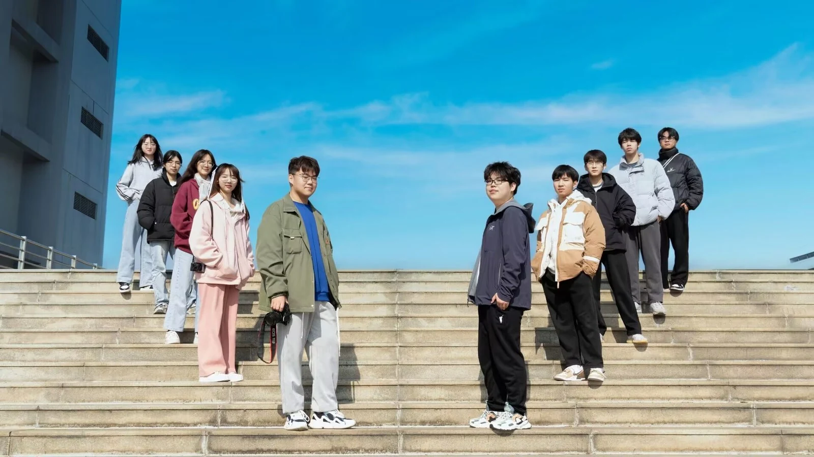
What this adds to engineering
- Leadership: planning, coordinating and taking responsibility for visible output.
- Communication: turning activity and technical work into clear records, not only internal notes.
- People skills: working with classmates, volunteers, event participants and small creative teams.
- Visual judgement: composition, lighting, timing and choosing images that tell the story.
- Documentation: field reports, commissioning photos, project updates and stakeholder material.
Leadership and team
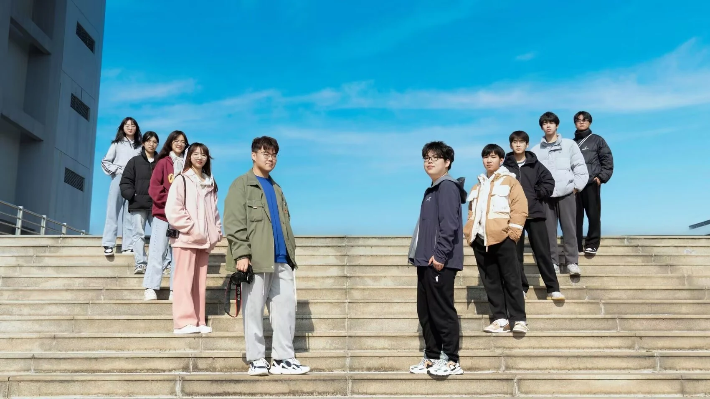
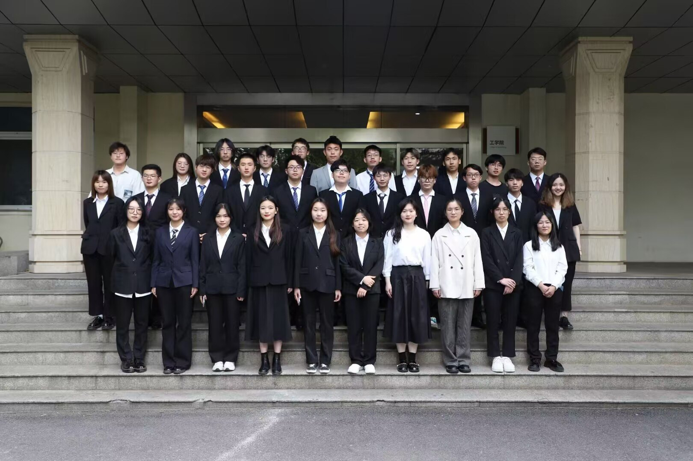
Photography gallery
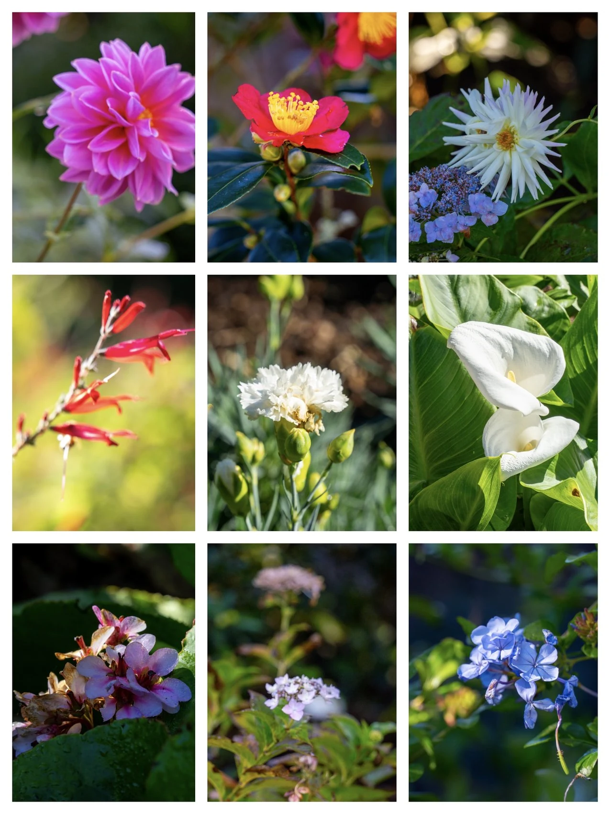
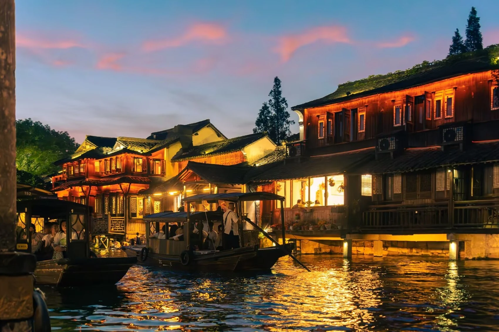
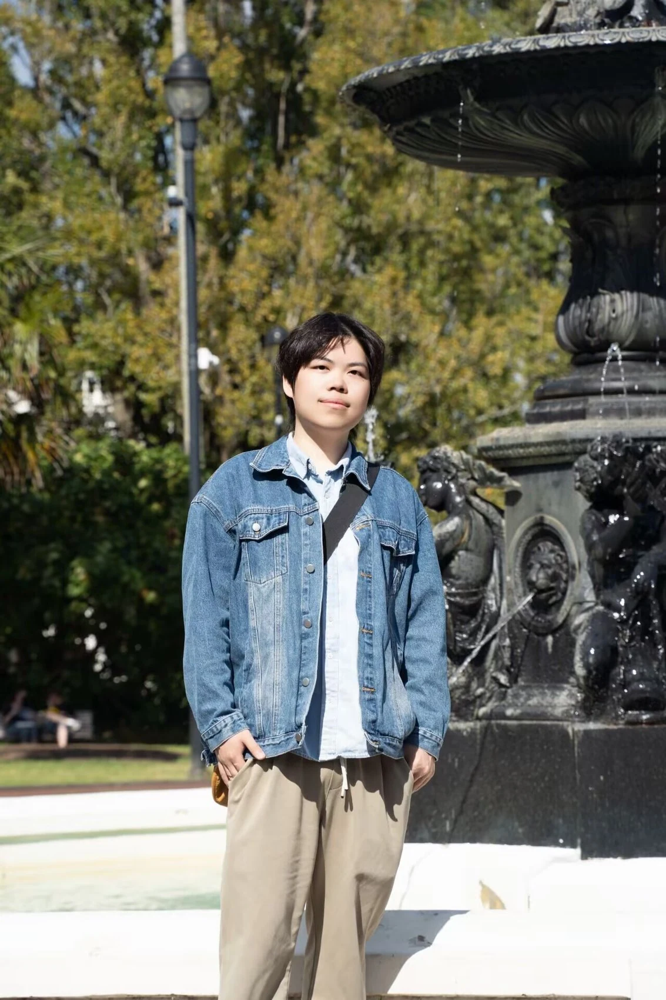
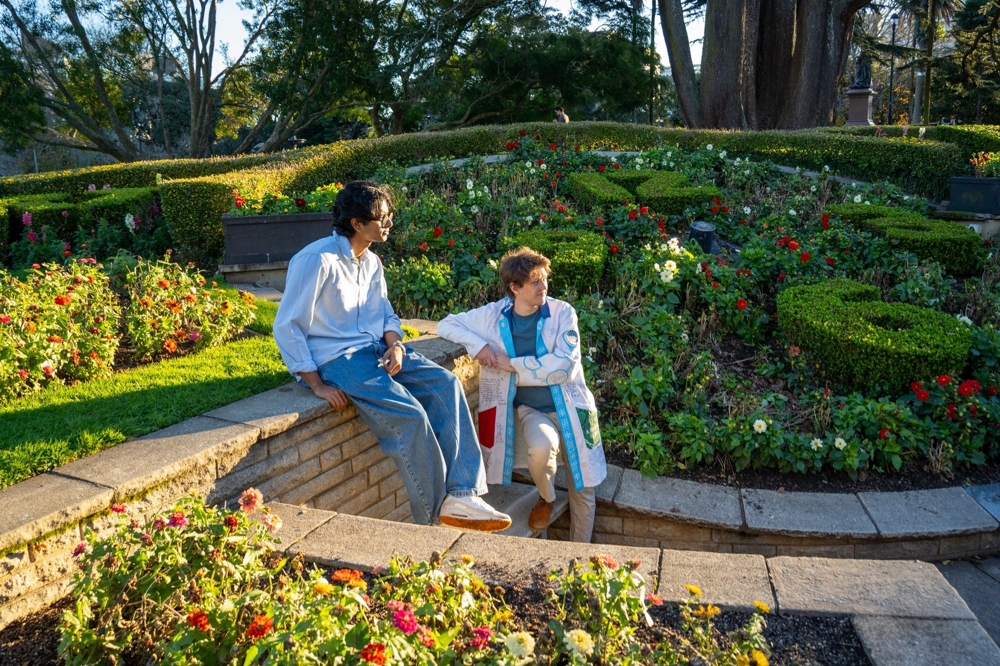
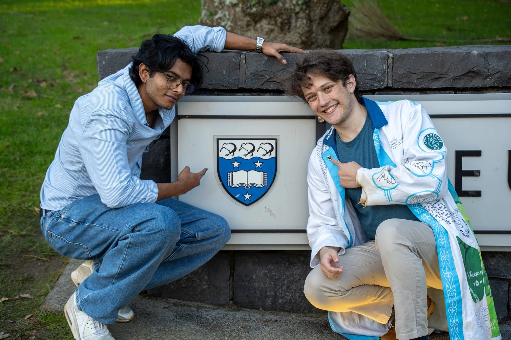
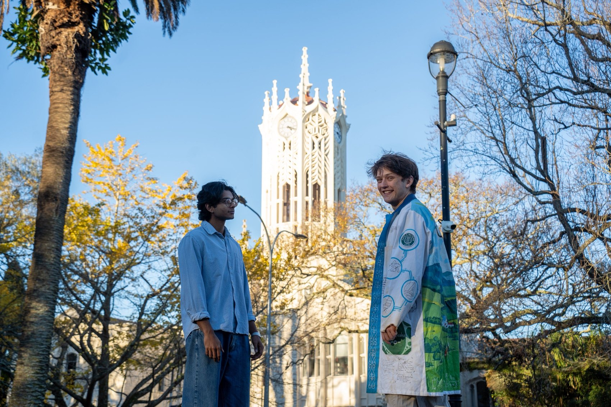
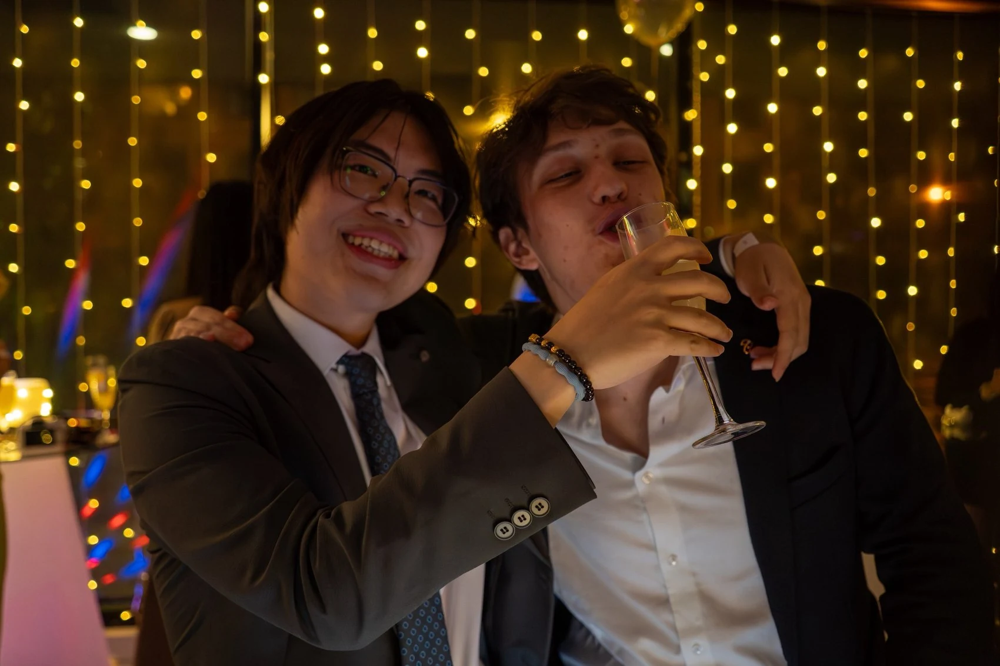
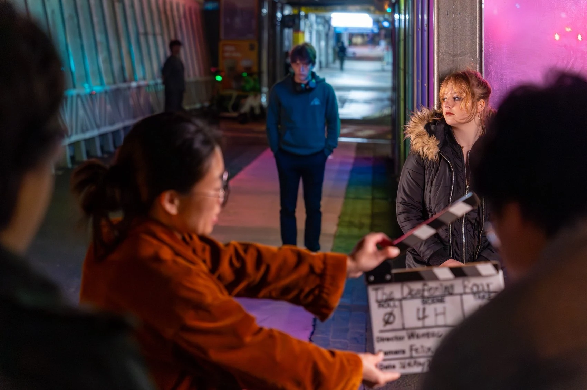
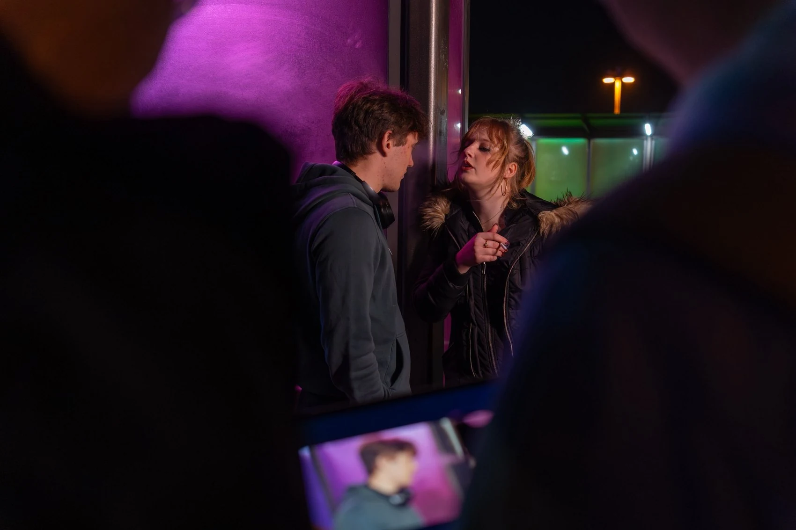
Need someone who can lead and explain?
Many engineering roles need people who can lead a small group, explain a system, document evidence and make a project clear to non-specialists. My engineering work is on the projects page.